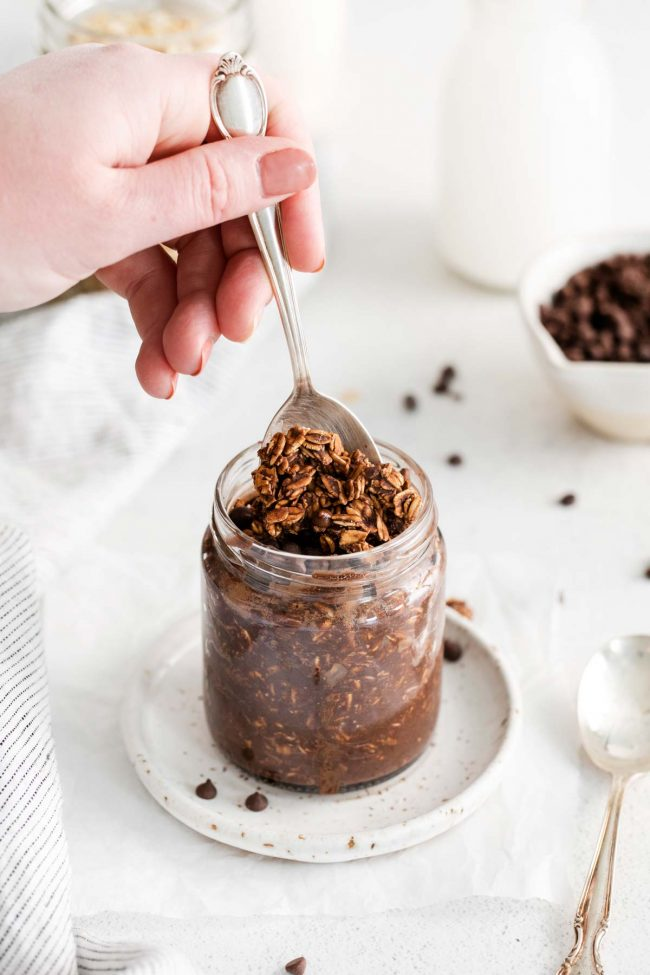

How to Make Overnight Protein Oats

Description
These chocolate protein overnight oats are the easiest way to wake up and have a protein-packed breakfast!
This is the perfect quick breakfast treat for busy mornings. Just make them the night before or up to 4 days in advance and wake up to breakfast served.
Ingredients
- Rolled oats or quick oats
- Milk
- Chocolate protein powder
- Cocoa powder
- Maple syrup
- Vanilla extract + mini chocolate chips (optional)
Steps
- Combine all the ingredients in a small bowl or mason jar.
- Cover and refrigerate overnight.
- Stir and enjoy!